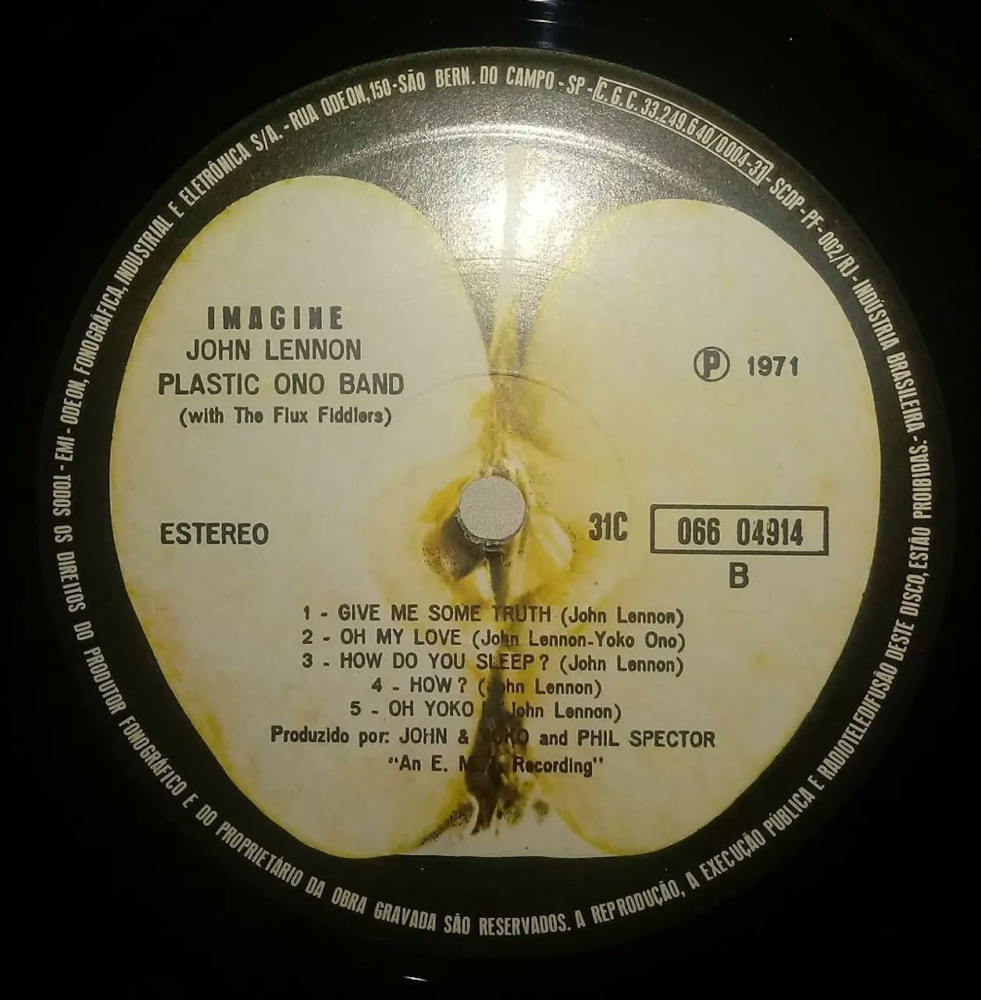
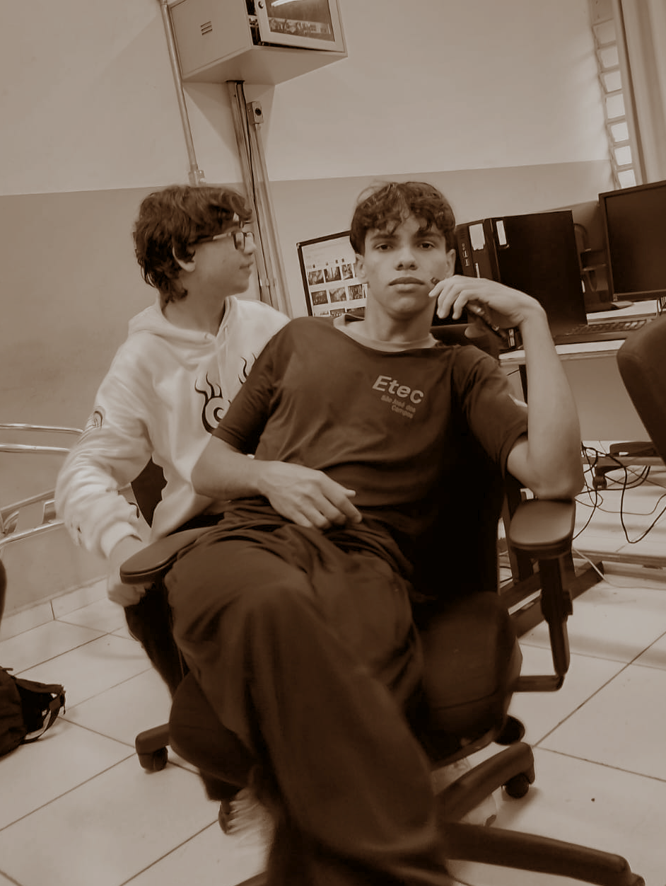

Hobbies!
Durante o tempo eu explorei diversos hobbies na tentiva de encontrar algum que eu gostasse de verdade (Como pintura, escrita, até mesmo esculpir em madeira.), mas só alguns preencheram esse papel!
Pixelart
Os retratos de uma personagem minha.
Por causa do projeto do jogo do primeiro ano (Veja em mais detalhes na aba acadêmica!), eu consegui treinar bem mais a pixelart, e mesmo que o projeto tenha tido um fim, eu continuei praticando.
Na aba galeria, tem diversas das minhas artes! Com o tempo aprendi tecnicas novas e explorei varias paletas que me ajudam até hoje na parte do front-end. No geral, um dos meus hobbies favoritos!
Algumas das ferramentas que eu uso: Aseprite, Lospec (Selecionar paletas e rescalar imagens), Pinterest (Referências), etc...
CDs, vinis e mídias físicas

Imagine: o meu primeiro LP, por John Lennon.
O meu hobbie favorito de todos é a minha coleção de mídias físicas! Eu gosto de garimpar em feiras, brechos, eventos e etc. É um hobbie que compartilho com meu vó, que também ama a música.
Junto, vem meu interesse por aparelhos como toca CDs, vitrolas, DVDs e sound systems, acaba se tornando um segundo garimpo pelo melhor equipamento para aproveitar as mídias.
Meus CDs/Vinís/DVDs favoritos são: Duran Duran: Decade, Nirvana: Unplugged, Click, Eu os declaro marido e Larry.
Fotografía

Ygor e Matheus Nunes, Sérpia, 2025.
É um habito que eu acabei criando com o tempo, fotografo principalmente meus animaizinhos, a natureza, a cidade e oque eu achar interessante.
Eu não levo muito como algo profissional, é mais uma coisa bem recreativa mesmo, então não me cobro tanto com qualidade, e também não sou lá essas coisas em habilidades fotográficas no geral...
Algumas das ferramentas que eu uso: Snapseed, Paint.net, Instagram (Divulgação e Inspiração), Pinterest (Referências), etc...